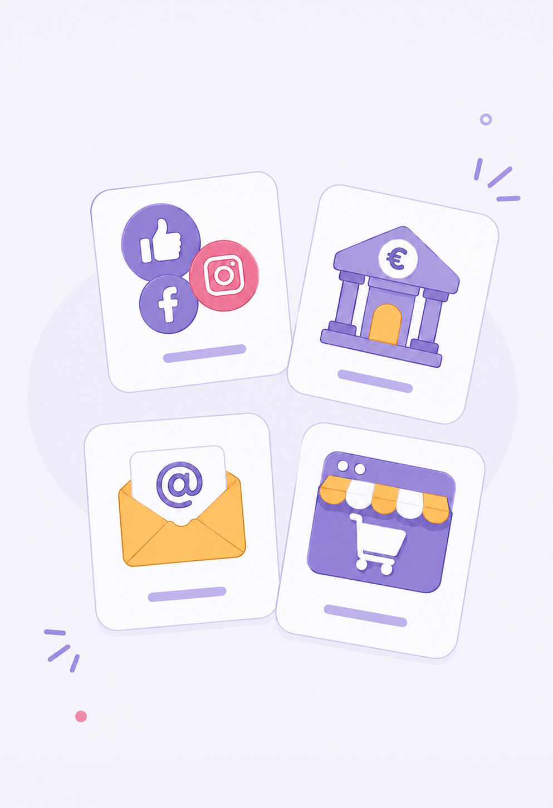

Étape 2 · DigComp 4.1
Protéger ses accès
Protéger ses comptes : mot de passe robuste, phrase de passe, double authentification.
Visuel à venir
assets/hero-etape2.jpg

Le mot de passe le plus utilisé au monde
Devinez… réponse : 123456, suivi de azerty, qwerty et password.
Premier constat : les pirates connaissent ces listes par cœur — leurs logiciels les testent en premier, automatiquement, par millions.
Exercice — testeur de robustesse
Point important : on n'entre JAMAIS un vrai mot de passe ici — on invente pour s'entraîner.
Cette page fonctionne entièrement hors ligne : rien de ce que vous tapez ne quitte la tablette.
—temps estimé pour le casser (ordinateur d'attaque : 10 milliards d'essais par seconde)
Ou testez les exemples de la mission
Ce que le testeur démontre : la longueur bat la complexité.
Quatre mots sans lien, faciles à retenir avec une image mentale absurde, tiennent des siècles —
là où un mot « compliqué » mais court tombe en quelques jours.
Fabriquer sa phrase de passe — la méthode des 4 mots
- Choisissez quatre mots sans lien logique entre eux (ex. : cheval · violet · mange · frites).
- Créez une image mentale absurde pour les retenir — plus c'est ridicule, mieux ça marche.
- Testez une version légèrement modifiée dans le testeur ci-dessus — jamais la vraie.
- Ne la dites à personne — y compris à la formatrice. Personne de légitime ne demande votre mot de passe.
Premier compte à protéger ainsi : votre boîte mail.
C'est elle qui permet de réinitialiser tous les autres comptes — c'est la clé du trousseau.
La double authentification, sans jargon
Vous la connaissez déjà : le code de la banque reçu par SMS, ou l'app itsme pour les démarches (banque, MyPension, tax-on-web). C'est ça, la double authentification : même si quelqu'un vole le mot de passe, il lui manque le téléphone.
Règle d'or associée : un code reçu par SMS ne se partage JAMAIS,
avec personne — même « la banque » au téléphone. La banque ne le demande jamais.
Livrable — Mes 4 réflexes accès
Cochez où vous en êtes, puis entourez votre prochain pas sur la carte-mémo papier.
1. Ma boîte mail a un mot de passe UNIQUE et LONG — c'est la clé de tous mes autres comptes.
2. Une phrase de passe (4 mots sans lien) vaut mieux qu'un mot compliqué : la longueur bat la complexité.
3. J'active la double authentification sur mes comptes importants (banque, mail, itsme).
4. Un code reçu par SMS ne se partage JAMAIS — même avec « la banque » au téléphone.